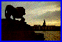
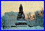

EUROPROBE 1
EUROPROBE 1
WebWeavers European Media/Art Research Exchange
Information and connections to the European media art scene...
Helsinki, Finland
August 20-24
ISEA International Symposia of Electronic Artists
St. Petersburg, Russia
August 25-28


Amsterdam, Netherlands
September 29-5
DigitalCity (De Digitale Stad) public access site
XS4ALL Hacktic's internet provider
- Online Institute for the Arts
- CyberTag Art BBS : 020-689-5226
- Association of Media Artists
- Bibliotheque Bajazza
- The Temporary Museum - tempmuse@dds.hacktic
Art and Architecture Groups in Rotterdam/H5>
Barcelona, Spain
September 5-10
EUROPROBE 1 - WebWeavers First European Media/Art Research Exchange
(more details to come...)
Contents


Compass
Home -
ANIMAIntro -
What's New -
Findex -
NodeMap -
AboutNode -
The WebWeavers -
System Help
ANIMA: EUROPROBE 1 - Created: Aug25/94 Modified: Sep2/94, Beta Version 0.3